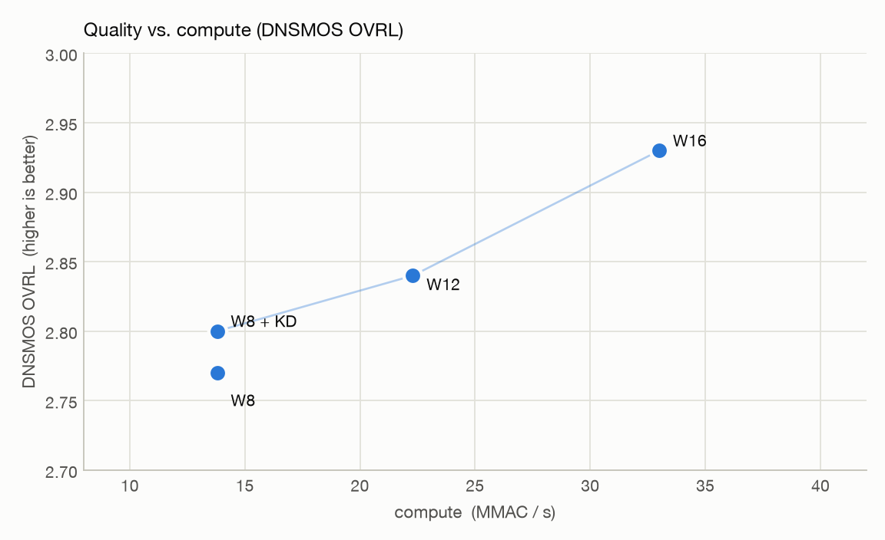
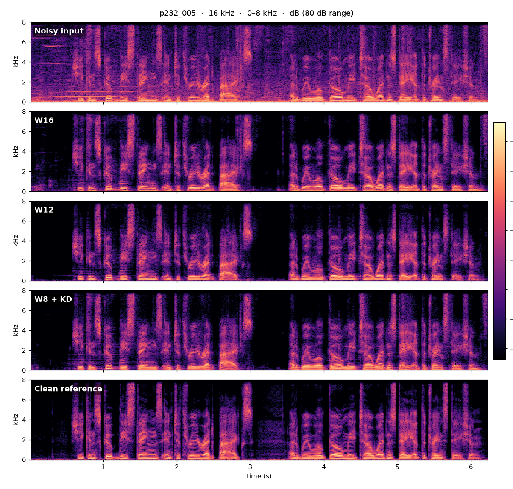
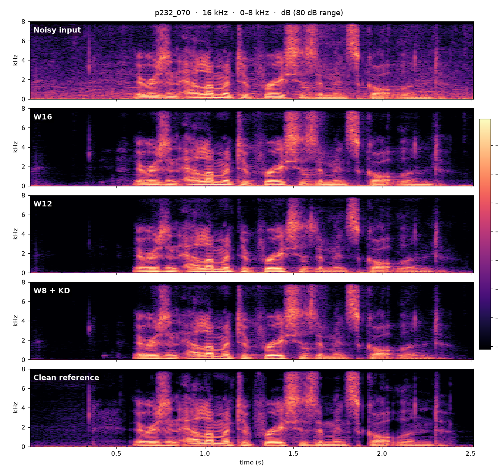
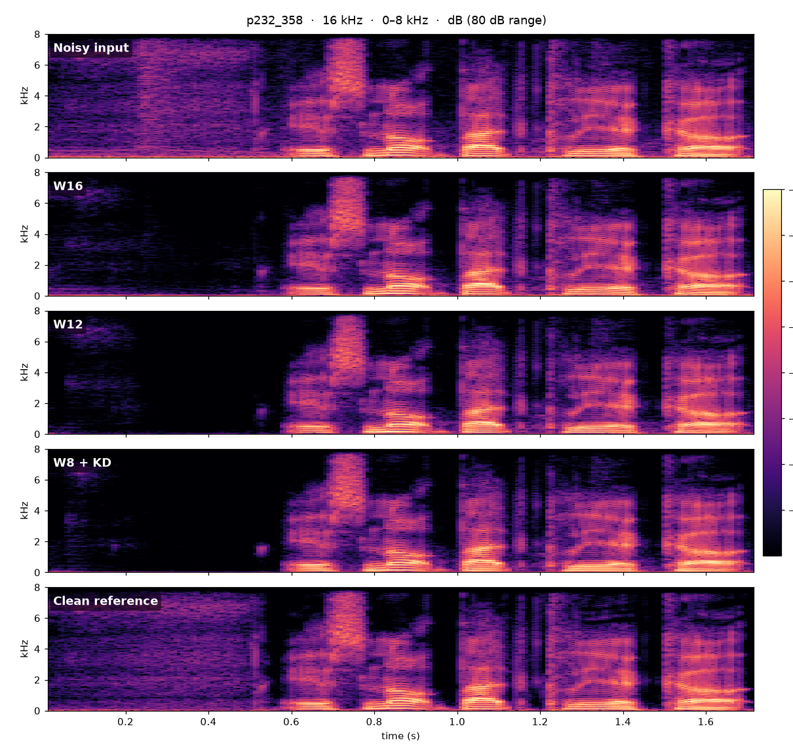
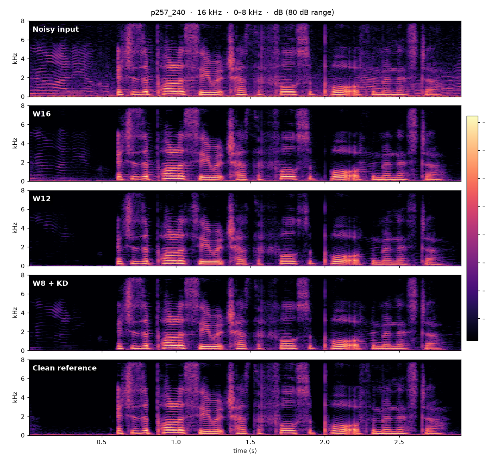
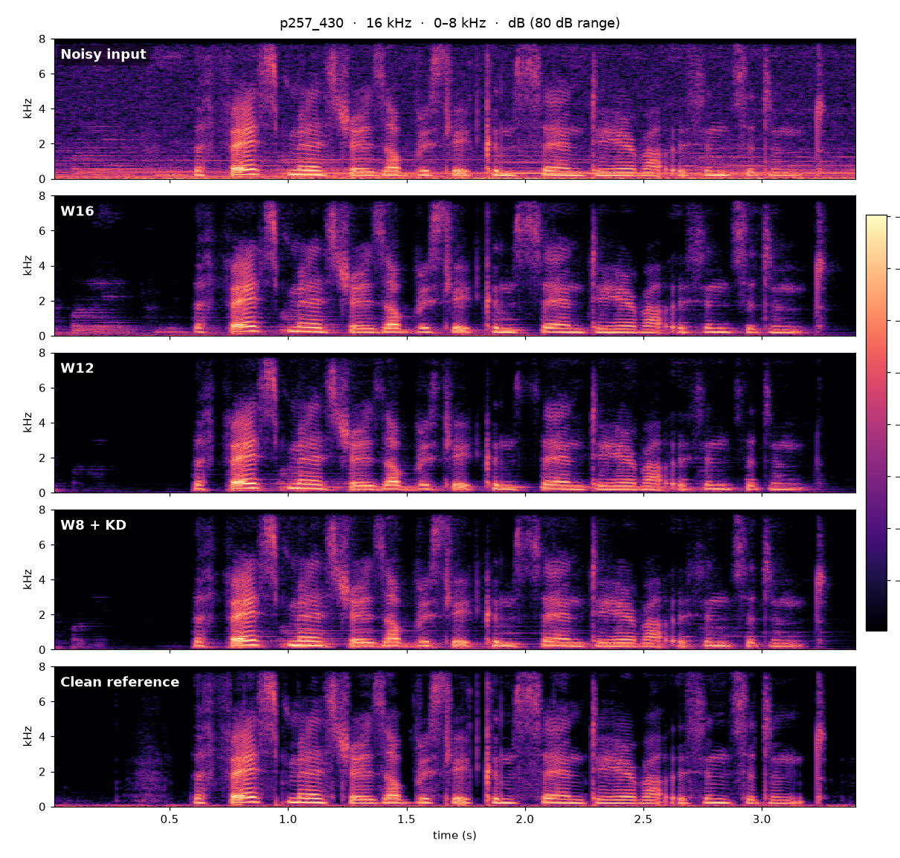

Neural Speech Denoiser — Listening Test
Five noisy utterances from the public VCTK-DEMAND test set, denoised by the compiled C library at its three model widths. All audio is 16 kHz mono; the enhanced clips are the library's int16 streaming output (suppression strength 1.0), one 16 ms frame behind the input, exactly as it runs on the device. Use headphones and compare against the clean studio recording in the last row of each card.
Objective evaluation
Our full-size model next to published lightweight real-time denoisers. The DNS OVRL scores are taken from each model's own publication and were not measured on a common test set, so they indicate magnitude only.
| Year | Model | Params | MMAC / s | DNS OVRL ↑ |
|---|---|---|---|---|
| 2018 | RNNoise | ~60 K | ~40 | 2.53 |
| 2024 | FSPEN | 79 K | 89 | not published |
| 2025 | UL-UNAS | 171 K | 35 | 2.71 |
| 2026 | Ours (W16) | ≈ 24 K | 33 | 2.93 |
Our model widths: DNSMOS (non-intrusive P.808 MOS and P.835 SIG / BAK / OVRL) on a held-out noisy test set. Models trained on DNS-Challenge speech and noise. ↑ higher is better.
| Variant | Trainable params | MMAC / s | P.808 ↑ | SIG ↑ | BAK ↑ | OVRL ↑ |
|---|---|---|---|---|---|---|
| W16 | ≈ 24 K | 33 | 3.63 | 3.22 | 3.95 | 2.93 |
| W12 | ≈ 15 K | 22 | 3.50 | 3.15 | 3.88 | 2.84 |
| W8 | ≈ 7.9 K | 14 | 3.44 | 3.10 | 3.80 | 2.77 |
| W8 + KD (distilled from W16) | ≈ 7.9 K | 14 | 3.48 | 3.13 | 3.81 | 2.80 |

Footprint
Embedded build: GCC 15, -O3 -ffast-math, single-precision hard-float. Compute is the
instruction count measured in an instruction-set emulator — a proxy for cycles, not a silicon measurement.
The library keeps zero static RAM; all state lives in one caller-provided instance block.
| W16 | W12 | W8 + KD | |
|---|---|---|---|
| Compute (M instructions / s) | 133.3 | 89.8 | 54.8 |
| Instructions per 16 ms frame | 2.13 M | 1.44 M | 0.88 M |
| Flash: code + weights | 121.7 KB | 86.4 KB | 58.3 KB |
| Library static RAM (.bss + .data) | 0 | 0 | 0 |
| Instance RAM (caller-provided) | 95.9 KB | 74.2 KB | 54.3 KB |
| Total | 217.6 KB | 160.6 KB | 112.6 KB |
Listening clips
Per-clip DNSMOS (non-intrusive) and SI-SNR against the clean recording, computed on the exact files behind the players. SI-SNR is measured after removing the library's one-frame delay. Mean over the five clips — OVRL: noisy 2.76 → W16 2.89 · W12 2.95 · W8 + KD 2.88 (clean 3.23); SI-SNR: noisy 10.4 dB → W16 15.8 · W12 16.3 · W8 + KD 15.6 dB.
p232_005 English · male speaker · 6.2 s

| Noisy input16 kHz, VCTK-DEMAND test setOVRL 2.51 · SIG 3.55 · BAK 2.54 · SI-SNR 1.9 dB | |
| W16library outputOVRL 2.96 · SIG 3.27 · BAK 3.91 · SI-SNR 11.8 dB | |
| W12library outputOVRL 3.04 · SIG 3.31 · BAK 4.02 · SI-SNR 13.2 dB | |
| W8 + KDlibrary output · smallest footprintOVRL 2.82 · SIG 3.13 · BAK 3.86 · SI-SNR 12.6 dB | |
| Clean referencestudio recordingOVRL 3.40 · SIG 3.63 · BAK 4.13 |
p232_070 English · male speaker · 2.5 s

| Noisy input16 kHz, VCTK-DEMAND test setOVRL 2.85 · SIG 3.60 · BAK 3.20 · SI-SNR 11.3 dB | |
| W16library outputOVRL 2.94 · SIG 3.31 · BAK 3.81 · SI-SNR 14.9 dB | |
| W12library outputOVRL 3.21 · SIG 3.44 · BAK 4.10 · SI-SNR 15.5 dB | |
| W8 + KDlibrary output · smallest footprintOVRL 3.08 · SIG 3.35 · BAK 4.03 · SI-SNR 14.6 dB | |
| Clean referencestudio recordingOVRL 3.37 · SIG 3.61 · BAK 4.12 |
p232_358 English · male speaker · 1.7 s

| Noisy input16 kHz, VCTK-DEMAND test setOVRL 3.21 · SIG 3.54 · BAK 4.00 · SI-SNR 15.5 dB | |
| W16library outputOVRL 3.24 · SIG 3.51 · BAK 4.10 · SI-SNR 19.6 dB | |
| W12library outputOVRL 3.24 · SIG 3.48 · BAK 4.13 · SI-SNR 21.9 dB | |
| W8 + KDlibrary output · smallest footprintOVRL 3.22 · SIG 3.45 · BAK 4.15 · SI-SNR 21.7 dB | |
| Clean referencestudio recordingOVRL 3.31 · SIG 3.60 · BAK 4.07 |
p257_240 English · female speaker · 2.9 s

| Noisy input16 kHz, VCTK-DEMAND test setOVRL 2.71 · SIG 3.57 · BAK 2.98 · SI-SNR 16.7 dB | |
| W16library outputOVRL 2.68 · SIG 3.15 · BAK 3.51 · SI-SNR 19.9 dB | |
| W12library outputOVRL 2.58 · SIG 2.90 · BAK 3.92 · SI-SNR 18.3 dB | |
| W8 + KDlibrary output · smallest footprintOVRL 2.72 · SIG 3.11 · BAK 3.69 · SI-SNR 17.9 dB | |
| Clean referencestudio recordingOVRL 3.13 · SIG 3.49 · BAK 3.89 |
p257_430 English · female speaker · 3.4 s

| Noisy input16 kHz, VCTK-DEMAND test setOVRL 2.50 · SIG 3.52 · BAK 2.60 · SI-SNR 6.7 dB | |
| W16library outputOVRL 2.64 · SIG 2.93 · BAK 3.84 · SI-SNR 12.8 dB | |
| W12library outputOVRL 2.69 · SIG 2.94 · BAK 3.99 · SI-SNR 12.7 dB | |
| W8 + KDlibrary output · smallest footprintOVRL 2.58 · SIG 2.91 · BAK 3.76 · SI-SNR 11.4 dB | |
| Clean referencestudio recordingOVRL 2.93 · SIG 3.35 · BAK 3.78 |